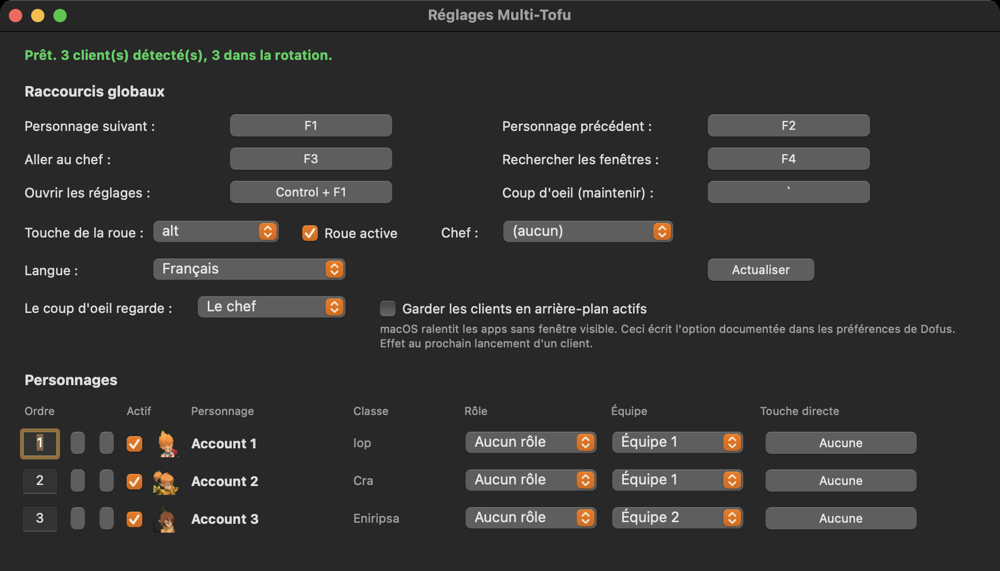

Ce que ça fait
Bascule instantanée
F1 et F2 parcourent votre rotation, F3 revient directement sur votre chef. Une touche, sans souris, sans Mission Control.
Client actif exact
La rotation suit précisément la fenêtre Dofus utilisée, même quand macOS signale plusieurs clients du jeu au premier plan.
Mac et VM Windows ensemble
Lancez un client Dofus sur votre Mac et un autre dans VMware Fusion. La VM rejoint la même rotation F1 et F2, la roue et les touches directes. Multi-Tofu reste sur le Mac, rien à installer dans Windows.
Roue ou panneau de groupe
Maintenez votre touche et choisissez le client à mettre devant. Le style se choisit dans les réglages : une roue sous le curseur, ou un panneau de groupe à gauche qui ressemble au cadre de groupe de Dofus, avec une couronne sur votre meneur et une touche sur chaque personnage.
Équipes
Répartissez vos personnages et ne tournez que dans l'équipe active. Pratique quand vous montez un donjon et laissez le reste en pause.
Touches directes
Une touche fixe par personnage. F5 va toujours sur votre Iop, quelle que soit la rotation.
Vrais pseudos
Les noms sont lus en direct dans la fenêtre du jeu. Rien à saisir, rien à tenir à jour.
Quatre langues
Anglais, français, espagnol et portugais, calées sur la langue de votre système.
Rôles
Marquez chaque personnage en tank, soigneur, dégâts, soutien ou éclaireur et sa part de roue prend un liseré de couleur. Au-delà de cinq clients, la couleur se lit plus vite qu'un nom.
Coup d'oeil
Maintenez une touche pour regarder un autre client, relâchez et vous revenez exactement où vous étiez, place dans la rotation comprise.
Ordre au clavier
Tapez un numéro pour placer un personnage. Trier une équipe par initiative prend six frappes, pas vingt clics sur une flèche.
Tout est conservé
Ordre, équipes, rôles, chef et chaque raccourci sont écrits sur le disque au fil de vos changements, par personnage. Revenez la semaine prochaine, rien n'a bougé.
Reste discret
Il ouvre les réglages la première fois pour l'installation, puis se fait oublier dans la barre de menus. Une fois lancé il ne revient pas au premier plan, même quand le Launcher Ankama le relance.
Une touche, une action
Attribuer une touche déjà prise la libère chez l'autre action. Deux actions sur une touche, c'est une des deux qui ne se déclenche jamais.
Déjà là quand vous arrivez
Lancement à l'ouverture de session en un clic, l'app tourne déjà quand vous ouvrez l'Ankama Launcher. Au repos elle ne coûte rien, sans client ouvert elle n'interroge même pas le système.
Seul le client où vous êtes
Activez le masquage et tous les autres clients disparaissent pendant que vous jouez celui du dessus. Plus rien ne dépasse sur les bords, Command Tab reste lisible, et ils reviennent dès que vous passez dessus.
Il reconnaît vos personnages tout seul
Vous ne saisissez jamais un pseudo. Multi-Tofu lit le titre de la fenêtre Dofus, donc dès qu'un personnage se connecte son vrai nom apparaît dans la roue, dans la barre des menus et dans les réglages. Un client ouvert mais resté sur l'écran de connexion n'a pas encore de personnage, il s'affiche donc en Compte 1, Compte 2 et ainsi de suite. Ces entrées restent cliquables dans le menu, vous pouvez y aller pour vous connecter, mais elles sont exclues de la rotation F1. Une touche ne vous envoie jamais sur une fenêtre sans personnage.

Installation en une minute
Télécharger et décompresser
Récupérez le zip sur la page des versions et glissez Multi-Tofu dans votre dossier Applications.
Clic droit, Ouvrir
L'app n'est pas signée avec un compte développeur Apple payant, le premier lancement demande donc un clic droit puis Ouvrir. Ensuite elle s'ouvre normalement.
Autoriser l'Accessibilité
macOS le demande une fois. Multi-Tofu en a besoin pour lire les titres de fenêtres et entendre vos raccourcis. Activez-le, les raccourcis s'allument deux secondes plus tard, sans redémarrage.
Mettre à jour plus tard
Une app signée sans compte développeur Apple payant change de signature à chaque version, macOS ne la reconnaît donc plus et vos raccourcis se taisent alors que l'interrupteur paraît toujours actif. Ouvrez les réglages et cliquez sur Réparer l'accès. Cela réinitialise l'autorisation et macOS redemande.
Raccourcis par défaut
| Personnage suivant | F1 |
| Personnage précédent | F2 |
| Aller au chef | F3 |
| Rechercher les fenêtres | F4 |
| Roue des personnages | maintenir Option |
| Coup d'oeil sur un autre client | maintenir ² |
| Ouvrir les réglages | Control + F1 |
Tout est modifiable. Les raccourcis sont enregistrés comme codes de touches physiques, ils survivent donc à un passage AZERTY vers QWERTY.
Aucune automatisation
Multi-Tofu met des fenêtres au premier plan. C'est toute la fonctionnalité. Pas de bot, pas de lecture de paquets, pas d'injection mémoire, et aucune diffusion d'une frappe vers plusieurs clients à la fois. Chaque action vient toujours de vous, dans un seul client à la fois. Le code est public, vous n'avez pas à nous croire sur parole.
Pourquoi ce projet
Sous Windows il y a Dosoft et Organizer. Sur Mac il n'y avait rien, et le projet le plus proche a été archivé en août 2026. Dosoft est en Apache 2.0 mais entièrement bâti sur l'API Win32, donc rien ne se transpose. Voici une implémentation neuve sur l'API d'Accessibilité macOS, un CGEventTap pour les raccourcis et AppKit pour la roue, en réutilisant les visuels de classe et le design fonctionnel sous cette licence.
Prérequis
- macOS 12 ou plus récent
- Dofus 3 (Unity), le client installé par l'Ankama Launcher
- Apple Silicon ou Intel, une seule version universelle
- Mode fenêtré ou sans bordure, la roue ne s'affiche pas au-dessus du plein écran exclusif